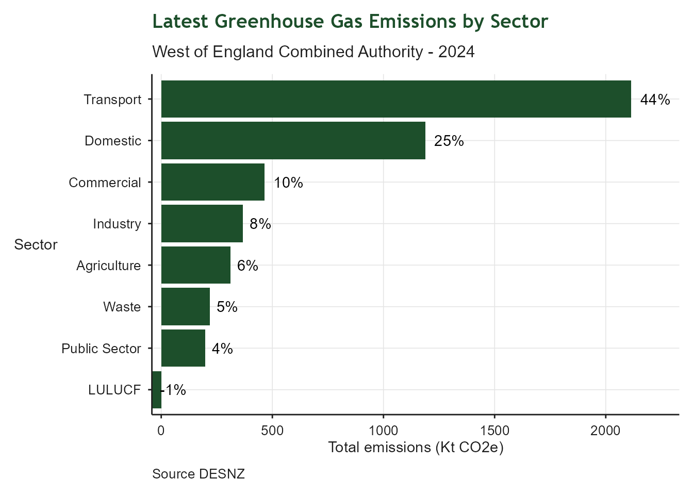

| Green Jobs and Growth: Indicator Summary | ||||
| Indicator | From | To | Latest value | Units |
|---|---|---|---|---|
| Regional greenhouse gas emissions | 2024-01-01 | 2024-12-31 | 4,333 | kilotonnes CO2e |
| Heat stress deaths | 2025-01-01 | 2025-12-31 | 35 | Deaths per million population |
| Frequency and duration of flood warnings relative to 2020 | 2025-01-01 | 2025-12-31 | 70 | Index relative to 2020 baseline. |
| Proportion of watercourses in good ecological health | 2022-01-01 | 2022-12-31 | 14 | % |
| Tree canopy | 2024-01-01 | 2024-12-31 | 10,657 | Hectares |
| Share of non-domestic buildings with an Energy Performance Certificate rating of A or A+ | 2026-06-01 | 2026-06-30 | 5 | % |
| Domestically generated renewable electricity | 2024-01-01 | 2024-12-31 | 0 | Sites per household for solar PV |
| Installed renewable electricity capacity per km square | 2024-01-01 | 2024-12-31 | 0 | MW/square km |
5 Green Jobs and Growth
Making the West of England the home for green jobs and growth
5.1 Context
This indicator summary tracks indicators related to green economy and environmental sustainability across the West of England. Topics include carbon emissions, renewable energy, water pollution, climate resilience and public health. Indicators were developed to provide high-level insights into regional trends and performance in relation to the West of England’s environmental priorities, which are informed by the Growth Strategy.
5.2 Greenhouse Gas Emissions
| Greenhouse Gas Emissions | |
| Transport, Commercial, Industry, Public sector, Domestic | |
| Latest value | 4,333 kilotonnes CO2e (2024-12-31) |
| Previous value | 4,426 kilotonnes CO2e (2023-12-31) |
| Change vs previous | ↓ -2.1% |
| First value | 5,795 kilotonnes CO2e (2015-12-31) |
| Change since first | ↓ -25.2% |
| Observations | 10 |
| Trend | |
| Last updated | 2026-08-03 |
Overview
Regional greenhouse gas emissions from transport, domestic, commercial, industrial and public sectors. This tracks the region’s progress toward the net zero target by 2030 and identifies key sectors for emissions reduction. Source data are UK local authority and regional greenhouse gas emissions statistics, 2005 to 2023 from the Department for Energy Security and Net Zero.
![Stacked bar chart of greenhouse gas emissions by sector in the West of England Combined Authority area, 2014 to 2023. The y-axis shows emissions in kilotonnes of CO2 equivalent; the x-axis shows year. Five sectors are colour-coded: Transport (green, largest), Domestic (red), Commercial (dark green), Industry (purple), and Public Sector (black). Total emissions declined from around 6,000 kt CO2e in 2014 to approximately 4,400 kt CO2e in 2023, though the region is not on track to meet its 2030 net zero target. Transport and domestic heating remain the dominant sectors.](index_files/figure-html/RI_5_ghg_emissions-1.png)
The indicator is defined by subset of sectors. To calculate the proportion of total emissions contributed by each sector, the current year total emissions are calculated and then used to derive percentage contributions for the current year. This allows for alignment with other work in the combined authority supporting transport and domestic sector decarbonisation. Note that LULUCF (land use, land use change and forestry) emissions are negative due to carbon sequestration and percentages are calculated based on the final balance after removals are subtracted.

5.3 Heat Associated Mortality
| Heat Associated Mortality | |
| Deaths per million population | |
| Latest value | 35 Deaths per million population (2025-12-31) |
| Previous value | 33 Deaths per million population (2024-12-31) |
| Change vs previous | ↑ +6.1% |
| First value | 33 Deaths per million population (2024-12-31) |
| Change since first | ↑ +6.1% |
| Observations | 2 |
| Trend | |
| Last updated | 2026-08-03 |
Overview
This indicator tracks the number of heat associated deaths per million population in the Avon Local Resilience Forum area, which largely correlates with the West of England. It provides insight into the region’s vulnerability to heat stress through the lens of public health. Data for the region are only available since 2024.

5.4 Flood Warnings Intensity
| Flood Warnings Intensity Index | |
| Relative to 2020 baseline | |
| Latest value | 70 Index relative to 2020 baseline. (2025-12-31) |
| Previous value | 167 Index relative to 2020 baseline. (2024-12-31) |
| Change vs previous | ↓ -58.3% |
| First value | 100 Index relative to 2020 baseline. (2020-12-31) |
| Change since first | ↓ -30.4% |
| Observations | 6 |
| Trend | |
| Last updated | 2026-08-03 |
Overview
This indicator is designed to represent the risk of flooding relative to a 2020 baseline. It is a duration-weighted composite indicator tracking flood warning activity across the West of England (Bristol, Bath & North East Somerset, South Gloucestershire, North Somerset and derived from the Environment Agency’s historic flood warnings dataset. It provides annual monitoring to support climate resilience reporting. The methodology for the indicator is described in this github repository.
![Line and point chart of the Flood Warning Intensity Index (FWII) for the West of England from 2020 to 2025. The y-axis shows the composite index value on a scale from 0 to 200; the x-axis shows year. A dashed green horizontal line marks the 2020 baseline at 100. The index fell sharply to around 40 in 2021 and 30 in 2022, returned to the baseline in 2023, peaked at approximately 165 in 2024, then dropped below the baseline to around 70 in 2025. The 2024 peak represents the highest flood warning intensity in the series.](index_files/figure-html/RI_5E2_flood_warning_index_plot-1.png)
5.5 Water Catchment Health
| Water Catchment Health | |
| Proportion of surface waters in 'Good' ecological health | |
| Latest value | 14% (2022-12-31) |
| Previous value | 12% (2019-12-31) |
| Change vs previous | ↑ +2.2 ppt |
| First value | 12% (2019-12-31) |
| Change since first | ↑ +2.2 ppt |
| Observations | 2 |
| Trend | |
| Last updated | 2026-08-03 |
Overview
This indicator tracks the ecological health of surface waters in the catchment which most closely represents the region - Avon Bristol and Somerset North Streams. It is expressed as the proportion of surface waters in ‘Good’ ecological health. The data are derived from the Environment Agency’s regular water quality monitoring programme. Surface water classification and sources have changed over the years, so data prior to 2019 are not comparable with recent datasets.

5.6 Tree Canopy
| Tree Canopy Cover | |
| National Forest Inventory Woodland | |
| Latest value | 10,657 Hectares (2024-12-31) |
| Previous value | 10,633 Hectares (2023-12-31) |
| Change vs previous | ↑ +0.2% |
| First value | 10,621 Hectares (2020-12-31) |
| Change since first | ↑ +0.3% |
| Observations | 5 |
| Trend | |
| Last updated | 2026-08-03 |
Overview
This indicator tracks the extent of tree canopy cover in the region, as measured by the National Forest Inventory (NFI). Tree canopy cover is an important aspect of urban greening, biodiversity and climate resilience. The NFI source dataset is filtered by the “Woodland” category and clipped to the boundary of the West of England to provide a regional measure of the area covered by woodland.

5.7 Non-Domestic Energy Performance
| Non - Domestic Energy Ratings | |
| Proportion of properties rated A or A+ | |
| Latest value | 5% (2026-06-30) |
| Previous value | 5% (2026-05-31) |
| Change vs previous | ↑ +0.0 ppt |
| First value | 2% (2017-07-31) |
| Change since first | ↑ +2.7 ppt |
| Observations | 108 |
| Trend | |
| Last updated | 2026-08-03 |
Overview
This indicator measures the energy efficiency of non - domestic property by expressing the proportion of properties which have an energy rating of A or A+, in other words the best performing properties. Data are sourced from the Ministry of Housing, Communities and Local Government.

5.8 Domestic Renewable Energy
| Domestic Renewable Energy | |
| Photovoltaic sites | |
| Latest value | 0 Sites per household for solar PV (2024-12-31) |
| Previous value | 0 Sites per household for solar PV (2023-12-31) |
| Change vs previous | ↑ +13.1% |
| First value | 0 Sites per household for solar PV (2015-12-31) |
| Change since first | ↑ +112.0% |
| Observations | 10 |
| Trend | |
| Last updated | 2026-08-03 |
Overview
Solar photovoltaic (PV) installations are a key aspect of energy security and net zero. This indicator tracks installations per household in the region. Almost all domestic PV installations are rooftop, so the indicator is expressed in terms of site counts rather than capacity. The data are derived from the Department for Energy Security and Net Zero’s renewable energy by local authority spreadsheet.

5.9 Renewable Energy
| Renewable Electricity Installed Capacity | |
| Installed capacity per square Km | |
| Latest value | 0 MW/square km (2024-12-31) |
| Previous value | 0 MW/square km (2023-12-31) |
| Change vs previous | ↑ +4.8% |
| First value | 0 MW/square km (2015-12-31) |
| Change since first | ↑ +110.6% |
| Observations | 10 |
| Trend | |
| Last updated | 2026-08-03 |
Overview
Potential for renewable energy capacity is strongly influenced by land availability and price, hence this indicator is expressed in terms of Megawatts per square Kilometre to enable future comparison with other regions.